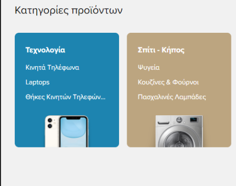

Insepct Element: skroutz.gr
Αλλαγή "title"
Άλλαξε ο τίτλος της ιστοσελίδας, στο πεδίο head του html εγγράφου.
Αλλαγή εικόνας
Άλλαξε η εικόνα.
Padding
Αυξήθηκε το padding-left, οπότε το περιεχόμενο έχει μετακινηθεί πιο δεξιά.
Margin
Αυξήθηκε το margin-top, οπότε το περιεχόμενο έχει μετακινηθεί πιο κάτω και δημιουργήθηκε μεγαλύτερη απόσταση.
Αλλαγή "title"
Άλλαξε το χρώμα του backround.